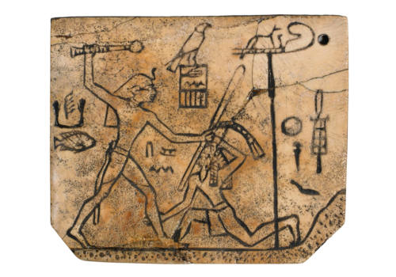
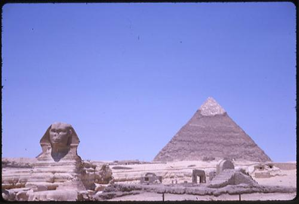
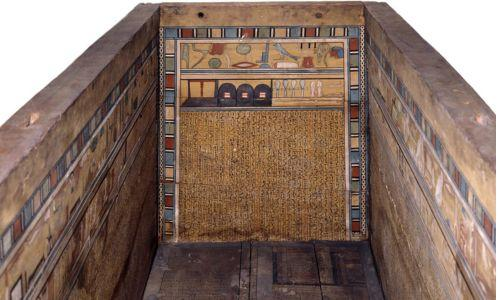
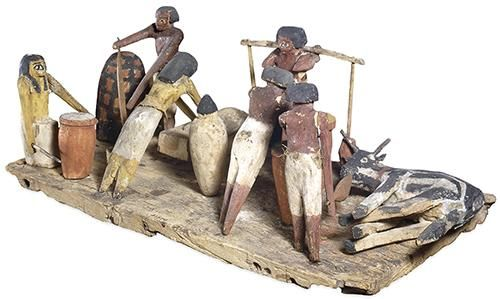
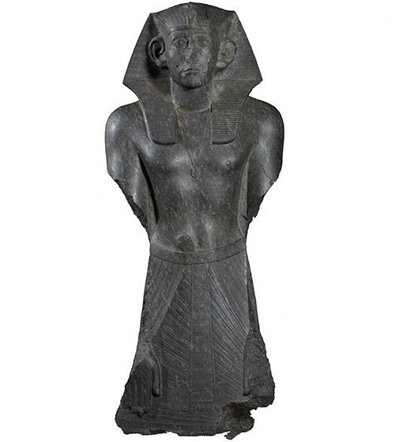
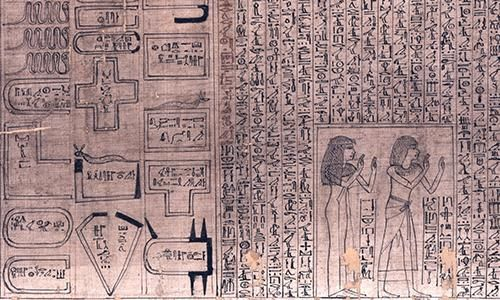
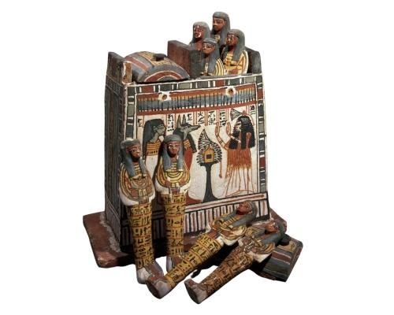

Kingdoms of Upper and Lower Egypt unite. Successive dynasties witness flourishing trade, prosperity and the development of great cultural traditions. Writing, including hieroglyphics, is used as an instrument of state. Construction of the pyramids - around 2,500 BC - is a formidable engineering achievement.
Writing using hieroglyphic signs develops. The ancient Egyptians use hieroglyphs for over 3,600 years to record important information.
Three large stone pyramids are built at Giza (near present-day Cairo). The pyramid built for the king Khafre is guarded by a huge stone sphinx with the body of a lion and the king's head.
Coffin texts are first used. These spells help the dead person travel through the underworld to the afterlife. They are written on the coffins of wealthy ancient Egyptians. First Intermediate Period (about 2181–2055 BC)
During the Middle Kingdom, wealthy people have wooden models of people preparing food or sailing on a boat put in their tombs to ensure good meals and safe travel in the afterlife. Middle Kingdom (about 2055–1795 BC)
Senusret III rules as king. He expands the territory controlled by Egypt and, during his 39-year reign, ancient Egypt is wealthy and powerful. Middle Kingdom (about 2055–1795 BC)
The Book of the Dead, a collection of about 200 spells to protect the dead during their journey to the afterlife, is first used. It is usually written on papyrus and put in a coffin or in a small hollow statue. Second Intermediate Period (about 1795–1550 BC)
Some ancient Egyptians have small figures called shabtis placed in their tombs to magically work for them in the afterlife. From about 1500 BC onwards, the number of shabtis in royal tombs increases. By 1000 BC, many wealthy people are buried with hundreds of them. New Kingdom (about 1550–1069 BC)
